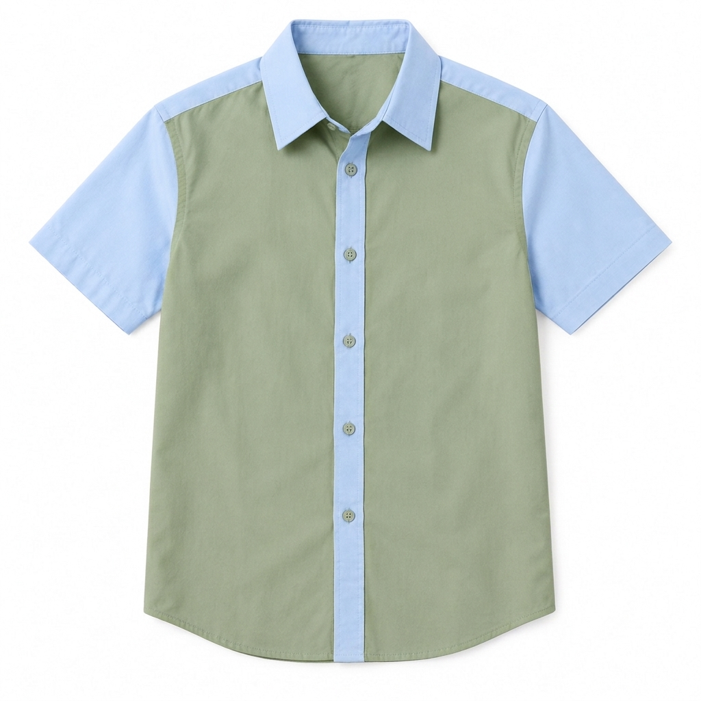
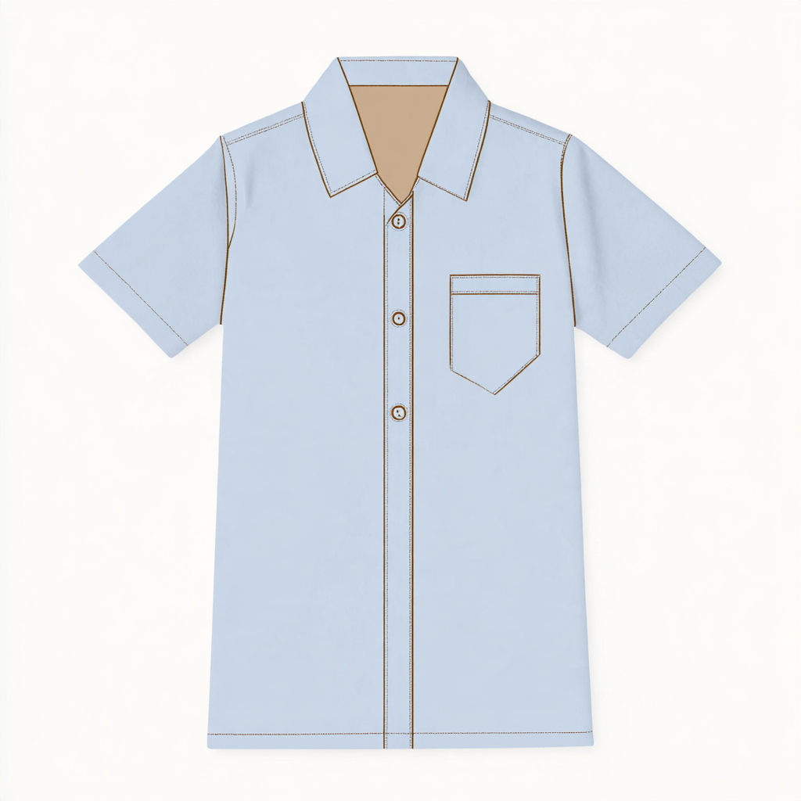
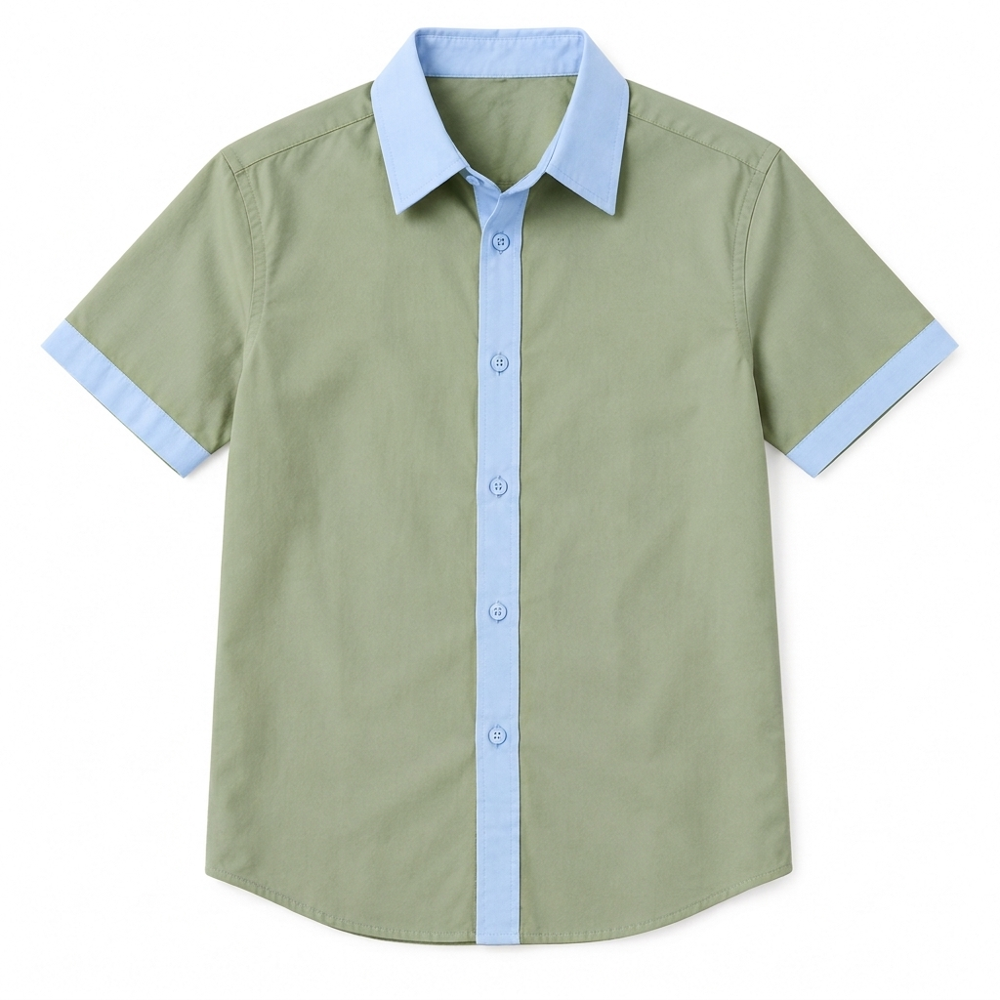

协议烟测 d5000000-0000-4000-8000-000000000003
success / 视觉待核 /

输入、最终提示词、验收点
{
"requestId": "pq:protocol-v2:protocol-d5000000-0000-4000-8000-000000000003:0",
"userInput": {
"scene": "free-optimize",
"fields": {},
"userText": "仅将衬衫大身改为鼠尾草绿色，保留其余内容。",
"referenceRoles": [
"参考图1"
],
"mode": "edit"
},
"finalPrompt": "仅将 Image 1 衬衫大身改为鼠尾草绿色（#9DA882），替换大身原色；保留领、袖、门襟、纽扣及其余内容不变。\n避免: 品牌 logo 或水印, 无关文字, 拼贴多宫格, 色卡条, 尺寸标注, 多余的手或肢体变形, 未成年人模特, 裸露或性感化表现.",
"checks": [
"协议提交、结果取回、原始 MIME",
"绑定模型不一致时阻止调用，不擅自更改管理员配置",
"单例协议烟测不能代表模型视觉质量"
]
}协议烟测 aplmart-mj-blend
success / 视觉待核 /

输入、最终提示词、验收点
{
"requestId": "pq:protocol-v2:protocol-d5000000-0000-4000-8000-000000000006:0",
"userInput": "",
"finalPrompt": "",
"checks": [
"双图 Blend 协议提交、结果取回与真实 MIME",
"Blend 不接受文字提示词，不调用扩写模型",
"单例烟测不能代表视觉质量"
]
}协议烟测 d5000000-0000-4000-8000-000000000009
success / 视觉待核 /

输入、最终提示词、验收点
{
"requestId": "pq:protocol-v2:protocol-d5000000-0000-4000-8000-000000000009:0",
"userInput": {
"scene": "free-optimize",
"fields": {},
"userText": "仅将衬衫大身改为鼠尾草绿色，保留其余内容。",
"referenceRoles": [
"参考图1"
],
"mode": "edit"
},
"finalPrompt": "仅将 Image 1 中衬衫大身的原色替换为鼠尾草绿色（#9DA882）。保留领、袖、门襟及其余内容不变，包括纹理、光影与背景。\n避免: 品牌 logo 与水印, 无关文字, 拼贴多宫格, 色卡条, 尺寸标注, 多余的手或肢体变形, 未成年人模特, 裸露或性感化表现.",
"checks": [
"协议提交、结果取回、原始 MIME",
"绑定模型不一致时阻止调用，不擅自更改管理员配置",
"单例协议烟测不能代表模型视觉质量"
]
}